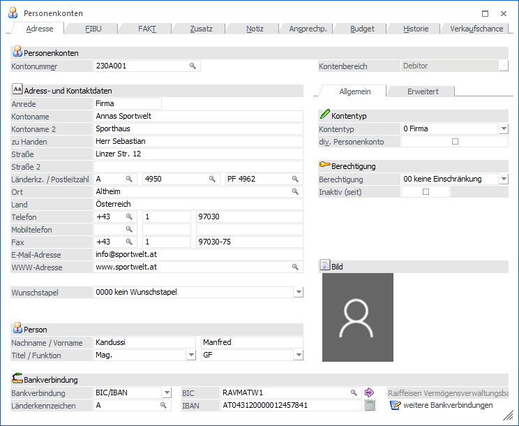
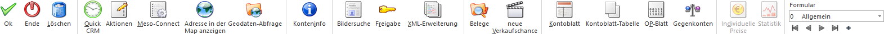

Bei Personenkonten handelt es sich um sogenannte "Hauptbuchkonten" und werden im Programmabschnitt
1 WinLine FIBU bzw. WinLine FAKT
1 Stammdaten
1 Personenkonten
angelegt bzw. gewartet. Ob es sich bei dem Konto wiederum um einen "Debitoren" (Kunden) oder einen "Kreditoren" (Lieferanten) handelt wird während der Neuanlage definiert.
Vom Hauptfenster aus kann man zu allen untergeordneten Informationsbereichen weiter verzweigen, wie z.B. den Fibu-Daten, den Fakt-Daten oder den Ansprechpartnern. Wenn die Kontonummer im Feld "Kontonummer" eingegeben wird, so gibt es mehrere mögliche Szenarien:
ü Die Kontonummer ist bereits
vorhanden
Es wird das Personenkonto mit allen entsprechenden Daten
angezeigt.
ü Die Kontonummer ist noch nicht
vorhanden
Es wird die Neuanlage eines Personenkontos vorgeschlagen, indem das
Fenster Personenkonten - Anlage
geöffnet wird.
ü Die Kontonummer ist bereits
vorhanden, wird aber von einem anderen Benutzer bearbeitet
Die Audit-Ampel
stellt sich auf Rot und es erscheint eine entsprechende Hinweismeldung. Wird die
Meldung mit "Ja" bestätigt, dann kann eine neue Personenkontonummer eingegeben
werden. Bei einer Bestätigung von "Nein" erfolgt automatisch eine erneute
Abprüfung, ob sich der Datensatz noch in Bearbeitung befindet.

Der Personenkontenstamm ist in mehrere Register unterteilt, welche in den nachfolgenden Kapiteln detailliert beschrieben werden:
ü Register "Stamm"
In dem Register
"Stamm" können die Grundstammdaten des Personenkontos erfasst werden.
ü Register "FIBU"
In dem Register
"FIBU" des Personenkontos werden alle wesentlichen Informationen verwaltet,
welche speziell die Finanzbuchhaltung betreffen.
ü Register "FAKT"
Im Register "FAKT"
des Personenkontenstamms werden alle wesentlichen Informationen verwaltet,
welche speziell die Fakturierung betreffen
ü Register "Zusatz"
Im Register
"Zusatz" können Zusatzfelder und Eigenschaften des Personenkontos hinterlegt
werden.
ü Register "Notiz"
In dem Register
"Notiz" kann eine Zusatzinformation in Form eines Notizblockes hinterlegt
werden.
ü Register "Ansprechpartner"
Im
Register "Ansprechp." werden die Ansprechpartner und die Beziehungen des
Personenkontos verwaltet.
ü Register "Budget"
In dem Register
"Budget" kann für jedes Personenkonto ein wertmäßiges Budget erfasst werden.
ü Register "Historie"
In dem Register
"Historie" wird der "Verlauf" des Personenkonten angezeigt.
ü Register "Verkaufschance"
Im
Register "Verkaufschance" werden die Verkaufschance bzw. Projekte und Kampagnen
des Personenkontos angezeigt und können direkt editiert werden.
Zusätzlich gibt es noch den Bereich "Exkurs" mit den folgenden Themen:
ü Prüfung der Umsatzsteuer-Identifikationsnummer
Buttons

Die folgenden Buttons stehen in allen Registern zur Verfügung. Eventuell zur Verfügung stehende Sonderbuttons werden in den jeweiligen Kapiteln der Register beschrieben.
Ø Ok
Durch Drücken des Buttons "Ok" bzw. der Taste F5-werden alle durchgeführten Änderungen bzw. Eingaben gespeichert.
Hinweis
Über die FIBU-Applikationsparameter der WinLine START (Parameter - Applikations-Parameter) kann eingestellt werden, ob neu angelegte bzw. geänderte Konten in Vor- oder Folgewirtschaftsjahre übernommen werden sollen. Diese Übernahme kann entweder automatisch oder manuell erfolgen. Wenn die Übernahme manuell erfolgen soll, so wird beim Speichern des Kontos das Fenster "Konto aktualisieren" geöffnet, wo die Wirtschaftsjahre ausgewählt werden können, auf welche die Änderungen bzw. das neue Konto "kopiert" werden sollen.
Ø Ende
Bei Anwahl des Buttons "Ende" bzw. der Taste ESC wird das Fenster geschlossen und alle nicht gespeicherten Eingaben verworfen.
Ø Löschen
Durch Anklicken des Buttons "Löschen" wird das Konto, sofern keine Bewegungen gespeichert sind (Konto darf nicht bebucht sein und es dürfen keine Belege vorhanden sein), gelöscht.
Ø Quick CRM
Wenn dieser Button angeklickt wird, kann ein CRM-Fall zu dem gerade geöffneten Personenkonto erfasst werden. Voraussetzung dafür ist:
ü Es muss eine gültige CRM-Lizenz vorhanden sein.
ü Der Benutzer muss ein CRM-Benutzer sein.
ü Es müssen entsprechende CRM-Aktionen bzw. CRM-Workflows mit der Kennzeichnung "QUICK CRM" angelegt sein.
Hinweis
Es werden im WinLine Standard 9 CRM-Aktionen (CRM-Gruppe "100") mitgeliefert.
Ø Aktionen
Durch Anwahl dieses Buttons kann eine Aktion für das Personenkonto ausgeführt werden. Die Art der Aktion wird dabei durch ein Kontextmenü ausgewählt. Folgende Aktionen stehen zur Verfügung:
ü  eMail senden
eMail senden
Das Personenkonto wird als
temporäre Kampagne an das Postausgangsbuch (Versandart "Einzel-Mail") zum
Erstellen und Versenden der E-Mail übergeben.
ü  Brief schreiben
Brief schreiben
Es wird das
Postausgangsbuch geöffnet, in dem für das Personenkonto ein Serienbrief
ausgegeben werden kann.
ü  Fax
Fax
Es wird das Postausgangsbuch
geöffnet, in dem für das Personenkonto ein Serienfax ausgegeben werden kann.
ü  Telefon 1 anrufen
Telefon 1 anrufen
Wird diese Aktion
gewählt und ist bei dem Personenkonto auch eine Telefonnummer eingetragen, wird
- sofern die entsprechenden Voraussetzungen vorhanden sind - die Telefonnummer 1
gewählt.
ü  Mobiltelefon anrufen
Mobiltelefon anrufen
Wird diese Aktion
gewählt und ist bei dem Personenkonto auch eine Telefonnummer eingetragen, wird
- sofern die entsprechenden Voraussetzungen vorhanden sind - die
Mobiltelefonnummer gewählt.
ü  WWW Adresse aufrufen
WWW Adresse aufrufen
Wenn bei dem
Personenkonto eine Internet-Adresse hinterlegt ist, wird der installierte
Browser geöffnet und automatisch die im Datensatz hinterlegte Adresse
angesurft.
Hinweis
Werden Aktionen im Register "Ansprechp." ausgeführt, so bezieht sich die gewählte Aktion auf den "aktiven" (bzw. ersten) Ansprechpartner. Im individuellen Fenster für Personenkonten gibt es hierfür einen Tabellenbutton.
Ø Meso-Connect
Durch Anklicken des Buttons "Meso-Connect" wird ein Kontextmenü geöffnet, in dem standardmäßig folgende "Meso-Connect"-Aktionen zur Verfügung stehen:
ü  Mail
Mail
An das Personenkonto kann mit dieser
Aktion ein Mail geschickt werden. Es öffnet sich dazu das Meso-Connect-Mail
Fenster indem die Betreffzeile des Mails sowie ein Text angegeben werden kann.
Weiter besteht noch die Möglichkeit, ein Attachment anzuhängen. Voraussetzung
ist, dass bei dem Personenkonto auch eine E-Mail-Adresse vorhanden ist.
ü  Kontakt
Kontakt
Mit dieser Aktion kann ein
Abgleich mit den Microsoft-Outlook-Kontakten durchgeführt werden, wobei es 4
unterschiedliche Szenarien geben kann:
ü 1. Der Datensatz ist in Outlook noch nicht vorhanden. In diesem Fall wird der Kontakt neu angelegt.
ü 2. Der Datensatz ist in Outlook bereits vorhanden, in der WinLine wurde eine Änderung durchgeführt. In diesem Fall werden die veränderten Daten an Outlook übergeben.
ü 3. Der Datensatz ist in Outlook bereits vorhanden und wurde dort auch verändert. In diesem Fall werden die veränderten Daten in die WinLine übernommen.
ü 4. Der Datensatz ist in Outlook und in der WinLine bereits vorhanden und wurde auch in beiden bereits verändert. In diesem Fall erfolgt eine Frage, welche der Daten aktualisiert werden sollen.
ü  Excel
Excel
Damit wird das Programm Microsoft
Excel gestartet und das Personenkonto wird mit den Spaltenüberschriften
übergeben.
ü  Word
Word
Hier wird eine Word-Vorlage
aufgerufen, in welche die Daten des Personenkontos übergeben werden.
ü  StarCalc
StarCalc
Sofern das Programm StarCalc
installiert ist, können die Daten in dieses Programm übergeben werden.
ü  StarWrite
StarWrite
Sofern das Programm StarWrite
installiert ist, können die Daten in dieses Programm übergeben werden.
ü  Wizard
Wizard
Über diesen Eintrag kann der
Meso-Connect Wizard aufgerufen werden, mit dem neue Aktionen erstellt bzw.
bestehende Aktionen verändert werden können.
Ø Adresse in der Map anzeigen
Wenn dieser Button angeklickt wird, wird - sofern eine Internetverbindung vorhanden ist - eine Internetseite geöffnet, in welcher der Standort der gewählten Adresse angezeigt wird.

Hinweis
Wenn im Bereich "Mein Standort" die eigene Adresse eingegeben wird, dann kann auch die Route zum Ziel ermittelt und angezeigt werden. Die Speicherung des eigenen Standorts per Cookie ist ebenfalls möglich.
Ø Geodaten-Abfrage
Mit Hilfe von Geodaten kann das Personenkonto in der Geo Map des Power Reports dargestellt werden. Durch Anwahl des Buttons "Geodaten-Abfrage" werden hierfür die genauen Geodaten des Personenkontos über das Internet ermittelt und abgespeichert. Die Ermittlung findet anhand der folgenden Parameter statt:
ü Straße
ü Postleitzahl
ü Ort
ü Land
Hinweis
Bei der Anlage eines Personenkontos werden automatisch ungenaue Geodaten (durch eine in der WinLine vorhandene Koordinatentabelle) ermittelt und zugewiesen. Die Ermittlung findet anhand der folgenden Parameter statt:
ü Postleitzahl
ü Länderkennzeichen
Ø Konteninfo
Durch Anklicken des Buttons "Konteninfo" werden alle Informationen zu diesem Konto angezeigt. Wenn zusätzlich zum Anklicken die SHIFT-Taste gedrückt wird, so gelangt man in die Kunden- bzw. Lieferanteninformation. Dies ist auch über den Shortcut (SHIFT + ALT + I) möglich.
Hinweis
Im Register Budget wird durch Anwahl des Buttons die Konten-Budget-Auswertung geöffnet.
Ø Bildersuche
Mit Hilfe dieses Buttons kann ein Bild für das Personenkonto gesucht, ausgeschnitten und zugeordnet werden. Hierbei wird zunächst über ein Menü die Quelle des Bilds definiert. Folgende Varianten stehen zur Verfügung:
ü Bildersuche
Es wird das
Programm "Bildersuche" geöffnet.
ü Bildersuche - WinLine
Es wird
das Programm "Bilder in Datenbanken" geöffnet, über welches eine Grafik
ausgewählt werden kann.
ü Bildersuche - Datenträger
Es
wird der Öffnen-Dialog von Windows geöffnet, über welchen eine Grafik ausgewählt
werden kann.
Ø Freigabe
Durch Anklicken des Buttons "Freigabe" kann für dieses Konto ein Freigabestatus vergeben werden. Nähere Informationen zu diesem Thema finden Sie im Kapitel "Freigabe" des WinLine START-Handbuches.
Ø XML-Erweiterung
Durch Anklicken dieses Buttons können zusätzliche Daten in XML-Struktur erfasst werden. Details hierzu entnehmen Sie dem Kapitel XML-Erweiterung.
Ø Belege
Durch Anwahl des Buttons "Belege" wird in der WinLine FAKT das Programm "Belege" in dem Modus "Info" geöffnet. In diesem werden alle Belege des Kontos, eingeschränkt auf das aktuelle Jahr, angezeigt.
Ø neue Verkaufschance
Mit Hilfe dieses Buttons kann eine neue Verkaufschance angelegt werden. Die aktuelle Kontonummer wird hierbei automatisch in die Verkaufschance übertragen.
Ø Kontoblatt
Durch Anklicken des Buttons "Kontoblatt" wird das Kontoblatt zu diesem Konto angezeigt, wobei das Kontoblatt ohne weitere Einschränkungen ausgegeben wird.
Ø Kontoblatt Tabelle
Durch Anklicken dieses Buttons wird das Kontoblatt ohne weitere Einschränkungen als Tabelle ausgegeben.
Ø OP-Blatt
Durch Anklicken des Buttons "OP-Blatt" wird das OP-Blatt zu diesem Konto angezeigt, wobei nur die nicht ausgeglichenen Offenen Posten angezeigt werden.
Ø Gegenkonten
Über den Button "Gegenkonten" wird das Fenster "Gegenkonten / Vorschlag bearbeiten" geöffnet. Hier werden die definierten Gegenkonten für das geladene Konto angezeigt und können editiert werden.
Ø Formular
Über die Auswahlbox "Formular" kann gewählt werden, in welcher Form der Stammdatensatz bearbeitet werden soll. Wenn die Option "0 - Allgemein" gewählt wird, dann wird wieder in die "Normalansicht" mit allen Eingabefeldern zurückgeschalten.
Hinweis
Die Definition der Formulare für die individuelle Gestaltung erfolgt im Programm WinLine START über den Menüpunkt "Vorlagen - Vorlagen Anlage - Individuelle Formulare".
Ø VCR-Buttons
Über die so genannten VCR-Buttons, welche in jedem Register zur Verfügung stehen, kann durch Mausklick zwischen den Datensätzen geblättert werden.
ü  Damit kann der erste Datensatz angesprochen werden.
Damit kann der erste Datensatz angesprochen werden.
ü  Damit kann der vorherige Datensatz angesprochen werden.
Damit kann der vorherige Datensatz angesprochen werden.
ü  Damit kann der nächste Datensatz angesprochen werden.
Damit kann der nächste Datensatz angesprochen werden.
ü  Damit kann der letzte Datensatz angesprochen werden.
Damit kann der letzte Datensatz angesprochen werden.
ü  Damit wird die nächste freie Nummer für die Neuanlage gesucht (nur im Register
"Stamm").
Damit wird die nächste freie Nummer für die Neuanlage gesucht (nur im Register
"Stamm").